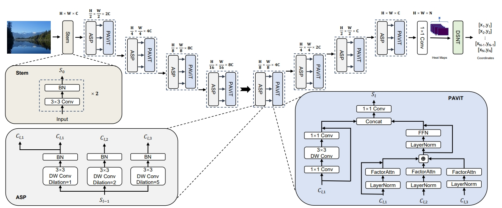
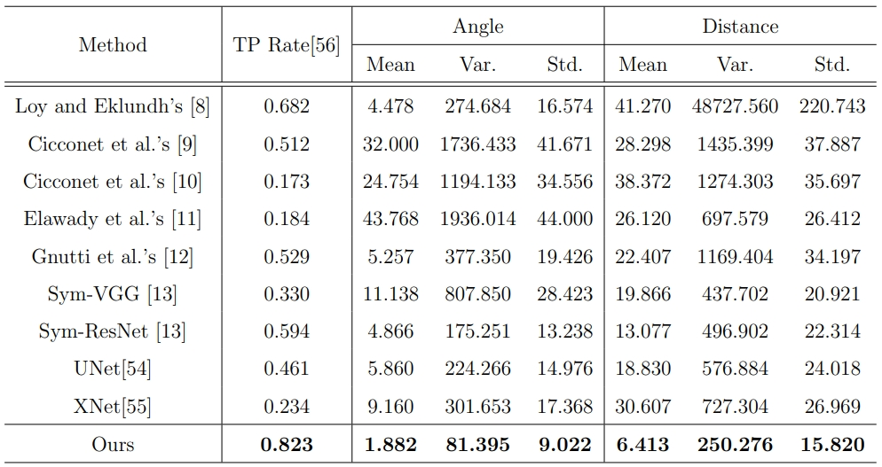
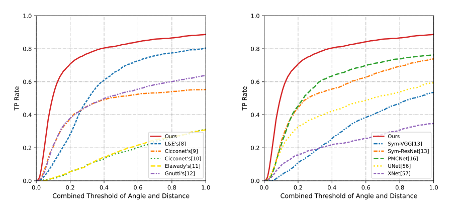
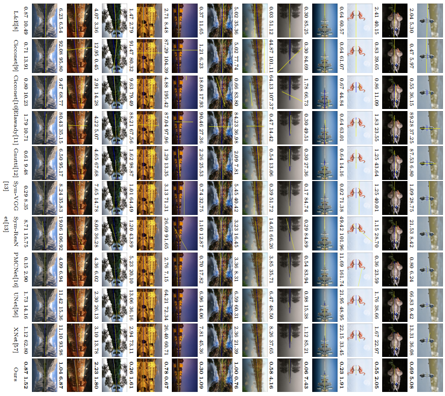

WRD-Net: Water Reflection Detection Using A Parallel Attention Transformer
|  |
The architecture of the proposed WRD-Net.

Statistics of the WRSD images, including the distribution of the lengths of all ground-truth axes (a), the distribution of the angles of all ground-truth axes (b) and the distribution of the mean y-coordinate values of the points annotated in each image (c).
|  |
Comparison of the baselines and WRD-Net in terms of different performance metrics.
|  |
Comparison of the TP Rate values derived using (a) image feature-based baselines and (b) learning-based baselines against our approach in terms of different combined thresholds.
|  |
| |
Each row shows the results derived using nine baselines and our method. The yellow line indicates the detected axis while the blue line suggests the ground-truth axis. The two values shown below each image indicate the angle and distance computed between the detected axis and the ground-truth axis.